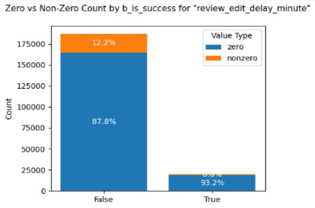
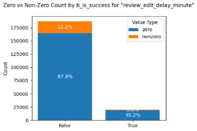

프로젝트 목표
- 게임 개발사 대상 리뷰 관리 및 운영 지원 B2B 대시보드 제공
- Steam 리뷰 데이터 분석을 통해 게임의 성공 요인 도출
프로젝트 배경
- Steam 리뷰는 게임 품질·만족도·문제점·인기 등을 실시간 반영
- 리뷰 점수와 개수는 상점 노출·추천 알고리즘·판매량과 직결
- 유저 리뷰 데이터 관리는 게임의 성공과 지속성에 중요한 역할
프로젝트 필요성
- 개발사와 유저 간 소통 채널 확보
- 리뷰 데이터 인사이트 도출로 성공 가능성 향상
- 리뷰 기반 게임 개선 및 업데이트 방향성 지원
- 리뷰 반응 추적을 통한 유저 니즈 파악
팀원 구성 및 역할
👨🏻🏫 김시온 (Azure Resource Manager)
- 데이터 수집 및 크롤링 환경 구축
- Databricks 파이프라인 설계
- 리뷰 데이터 전처리 및 분석
- ERD 구조 및 DB 관리
- Power BI 대시보드 연동
👩🏻🏫 송누림 (Project Leader)
- 분석 주제 및 시나리오 기획
- EDA 진행 및 인사이트 도출
- 대시보드 기획 및 발표 자료 정리
👩🏻🏫 김태연 (Azure-Git Manager)
- 리뷰 텍스트마이닝 및 모델링
- 감정 분석 모델 설계 및 테스트
- Feature 도출 및 데이터셋 작성
👨🏻🏫 김지민 (Project Manager)
- Steam API 크롤링 구조 설계
- 데이터 병합 및 전처리 관리
- 분석 파이프라인 관리
👩🏻🏫 이민지 (Git Resource Manager)
- 유저 클러스터링 및 Feature 설계
- 통계 검증 및 분석 인사이트 공유
- Power BI 시각화 기획
👨🏻🏫 윤지찬 (Azure Resource Manager)
- 리뷰데이터 크롤링 테스트
- API 수집 모듈 설계
- DB 관리 및 ERD 지원
- 발표자료 취합 및 검수
📊 데이터 수집

- Steam API & Selenium 활용
- RPG 인기 게임 200 + 최고 평점 200 → Top-tier 선정
- 랜덤 샘플 1,000개 → Other 게임
- 최종 1,037개 게임 리뷰 200건씩 수집
🧹 데이터 전처리 & 🔎 분석
1️⃣ 데이터 전처리

- 결측치/이상치/비유효 데이터 처리
- 텍스트 정규화 & 불용어 처리
- 파생 컬럼 생성


 



📈 대시보드 (서비스)

무료 대시보드


유료 대시보드


문제 상황 & 해결
- 데이터셋 선정 난항 → Steam 데이터 활용
- 작업 효율 저하 → 역할 분리 & 팀 협업 강화
- 크롤링 예외/제한 발생 → 슬립 조절 & 예외 처리
- 성공/비성공 기준 불명확 → 최고 수익 & 평가 기준 설정
- 모델링 성능 저하 → Databricks ML GPU 활용
- 리뷰 수집 불균형 → 대시보드 필터링 기능 제공
기대 효과
- 유저 피드백의 체계적 관리
- 게임 품질 및 UX 개선
- 시장 트렌드 및 경쟁력 분석
- 마케팅 및 커뮤니티 전략 강화
- 데이터 기반 의사결정 지원
- 장기적 성공 및 수익 증대